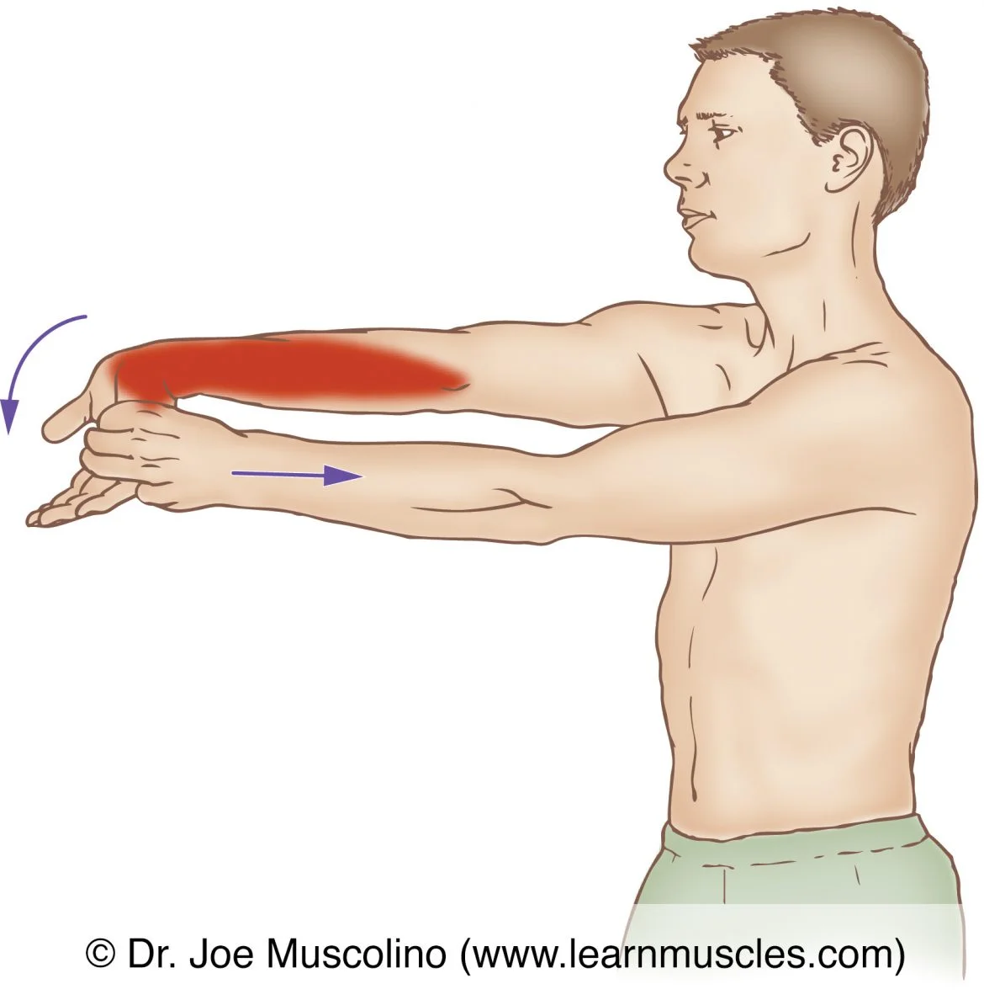
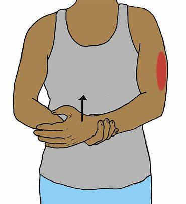

Elbow Rehab Guide
Rehab Tips
| # | Tip | Description |
|---|---|---|
| 1 | Rest and Avoid Overuse | Limit activities that cause strain on the elbow. |
| 2 | Use Ice/Heat Therapy | Apply ice for pain and inflammation, heat for stiffness. |
| 3 | Stretch and Strengthen | Perform gentle stretches and strengthening exercises. |
| 4 | Use Proper Ergonomics | Ensure proper wrist and elbow position during activities. |
Rehab Exercises
| # | Exercise | Description | Image |
|---|---|---|---|
| 1 | Wrist Flexor Stretch | Extend arm, pull fingers back gently to stretch forearm. |  |
| 2 | Wrist Extensor Stretch | Extend arm, pull fingers downward for a stretch. | |
| 3 | Elbow Isometric Hold | Push hand against resistance without moving elbow. |  |
| 4 | Forearm Supination/Pronation | Hold a light weight and rotate palm up and down. | |
| 5 | Grip Strengthening | Squeeze a soft ball to improve grip strength. |  |
| 6 | Triceps Stretch | Reach one hand behind back and gently pull elbow. |  |